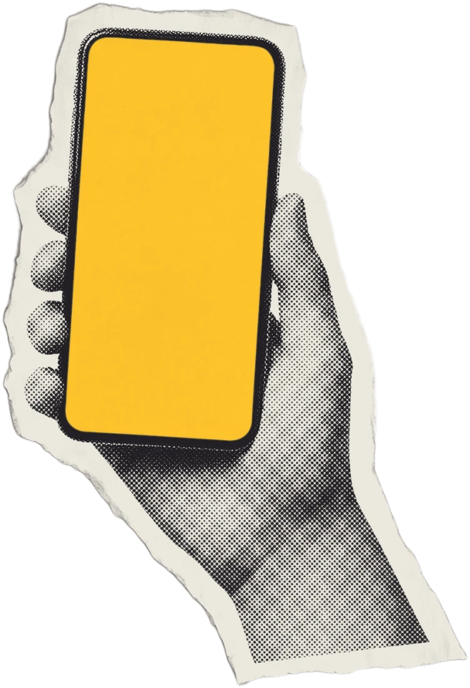
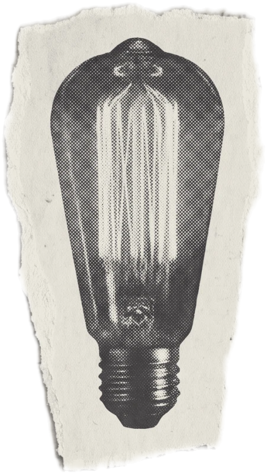
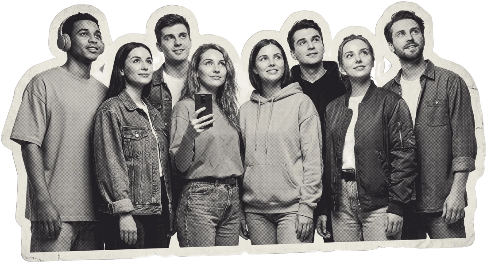
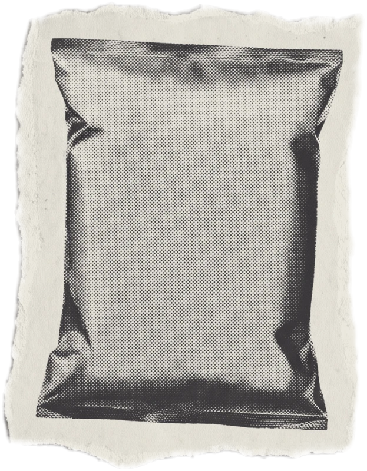
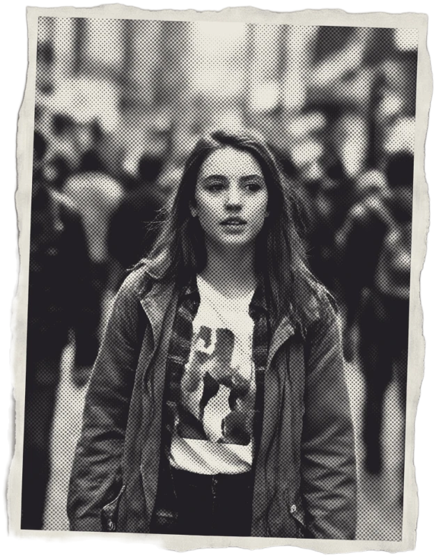
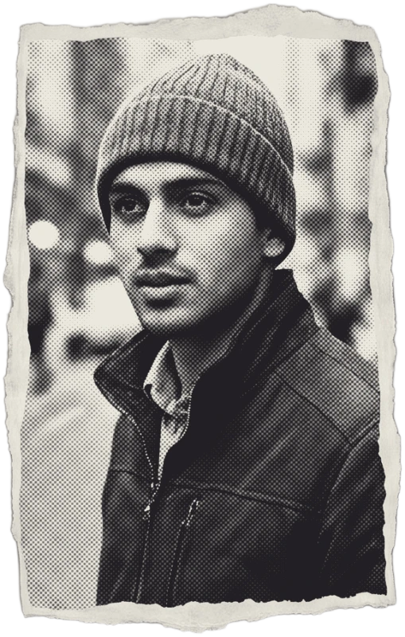

(almost)
all of them.

01
Educational
content.
think…

your audience
value
+ value
Did you
know?
(something new!)
A good example:
Whole
Truth
Foods

INGREDIENTS
consumers
the journey
If you can make your audience…
A good example:

Humans of Bombay

Humans of New York
0
followers
almost overnight!
…they made their
audience
feel
something.
03
Topical
content.
TODAY
Founder, Purple Seed
0
brands
in 9 years!
The only content
that
works
on social media.
02
Emotional
they come
back for more ↺
Humans are
emotional creatures.